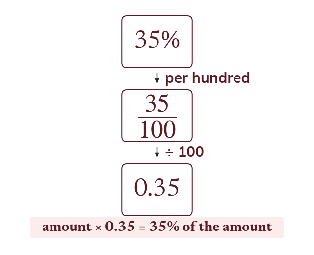

Percentage means per hundred
Per cent means per hundred: 35% = 35 ÷ 100 = 0.35. To find 35% of an amount, multiply by 0.35, the multiplier.
"Per cent" literally means "per hundred", so p% is the fraction p100, which is also the decimal p100. To find p% of an amount, multiply the amount by that decimal - called the multiplier. For example 35% = 35 ÷ 100 = 0.35, so 35% of an amount is that amount × 0.35.